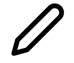

UX 研究
- 競品分析
- 資料分析
- 用戶回饋分析
- 人物誌 Persona
- 使用者調查訪談
訂定設計規範 Design Guidelines
- 設計準則 Design Principles
- 視覺系統 Visual System
- 完整產品線設計規範 Design Guidelines
介面流程規劃 UI Flow
- 功能地圖 Functional Map
- 流程圖 Flow Chart
- UI Flow 介面（頁面流程）
視覺設計 Visual Design
- 圖像設計 UI icon
- 設計風格規範 Design Specification
質感設計 Material Design
- Environment 環境
- Layout 排版
- Navigation 導覽列
- Color 顏色
- Typography 文字排版
- Sound 聲音
- Iconography 影像學
- Shape 形狀
- Motion 動作
- Interaction 相互作用
- Communication 傳達
- Machine learning 機器學習
設計軟體使用:Figma、Adobe XD、Sketch ...
- Sketch（草稿）
- InVision（原型設計）
- Zeplin（標註）
- Dropbox（雲端同步）
- Abstract（版本歷史）
- Craft-Freehand（實時討論）
- Liveshare（實時分享）
- Team Library （團隊組件庫）
- Web API（第三方接入）
原型製作 Prototype
- 探索型原型測試：點子發想
- 評估型原型測試：想法收斂
- 溝通展示原型測試：專案溝通、使用者測試